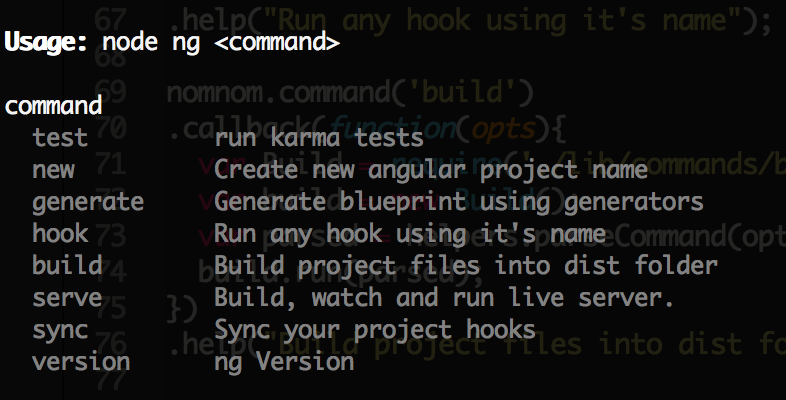
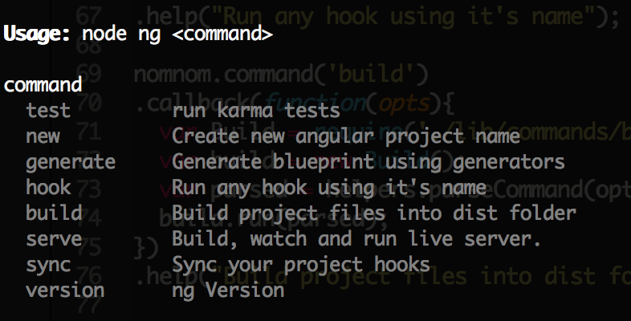

/moncef_hbey
/moncef_hbey
What's AngularJS and what's new ?
Web Developer / Founder @YatouBiz
Google Day Algiers, 7 May 2016
Brief History
From the server to the client, and then both (isomorphic) !
Server-side rendering
- State change is done by server.
- Page reload each time.
- Poor user experience (UX).
- Fast initial load page.
- Good for SEO.
From server to client : Single page applications (SPA)
- State change is done by client.
- No page reload.
- Rich UX.
- Slow initial load page.
- Bad for SEO.
The rise of javascript frameworks


You said both !
To be continued ...
HTML enhanced for the web apps
Angular for mobile
Ionic : Advanced HTML5 Hybrid Mobile App Framework
Write Angular 1 apps, for Angular 2.
Style guide : https://github.com/johnpapa/angular-styleguide/tree/master/a1What's new ?
- Angular 1.5
- Angular 2 !
Angular 1.5
- Angular.component()
- Lifecycle Hooks.

Angular 2
Angular 2 is now really ! really ! fast !
- Change detection.
- Web workers.
- Immutable Objects & observable
- Server-side rendering.
Change detection
- 3-10 faster.
- More speed with : immutables and observables.

Web Workers
UI Thread (App) <----> Another Thread (framework)
Immutable Objects and Observables
- Immutable.js (facebook/ReactJS)
- RxJS (Microsoft)
Angular Universal
Angular now run on both server and client (isomorphic).

- Fast initial load page.
- Optimized for Search Engine.
- Site Preview : facebook, twitter, ...
Cross Platform
Progressive web apps
Native apps


Desktop apps
TypeScript : superset of javascript (es6/7 + Types)

- Compile from TS => Javascript : ES5, ES6.
- Plain javascript in runtime.
- Predictable data flow.
- Features from the future, es6, es7, and even es8 !
- For IDEs : Enable the power for code completion, instant errors, code refactoring, go to definition.
Exemple 1:
function foo() {
// Some operations.
}
// Error, Here foo is a function,
// This will always gives false !!!
// This error will never be detected in plain javasript.
// => Using TypeScript will highlight an error just bellow foo
if(foo > 50){
SendVeryImportantEmail();
}
Exemple 2 :
var height = parseInt(document.getElementById('someElementID'));
if(height > 100){ // false always !
hideElement();
}
Angular cli
 

Angular 2 size now !
Official Style Guide
Augury : angular 2 debugger tool. (as a chrome extension)
Upgrade : Go form Angular 1, to angular 2.
https://angular.io/docs/ts/latest/guide/upgrade.html